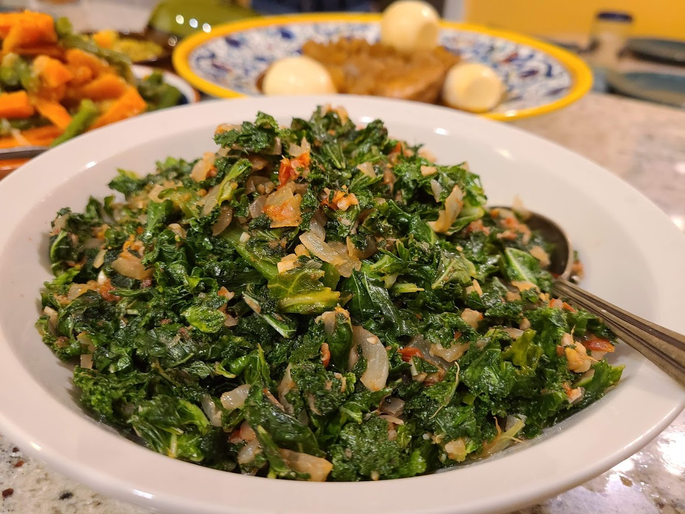

This is a recipe for making gomen

Gomen is a traditional Ethiopian dish made with collard greens. It is often served as a side dish with injera and other stews.
Here is a simple recipe to make gomen:
- Ingredients:
- 1 lb collard greens, chopped
- 1 large onion, finely chopped
- 1/4 cup vegetable oil
- 2 cloves garlic, minced
- 1 inch ginger, grated
- Salt to taste
- 1/4 cup water
- Instructions:
- In a large pot, heat the vegetable oil over medium heat.
- Add the chopped onions and sauté until golden brown.
- Add the garlic and ginger, and cook for another minute.
- Add the collard greens and stir to combine.
- Add salt and water, cover the pot, and simmer for 20-30 minutes until the greens are tender.
Back to home